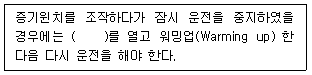
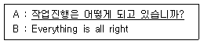
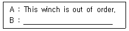

양화장치운전기능사 (2009-07-12 기출문제)
1과목: 임의구분
1. 전기를 이용한 하역장비(겐트리 크레인)가 주행할 때의 조치사항으로 틀린 것인?
- Rail clamp(레일 클램프)개방
- 전도방지장치 해방
- Anchor(앵커) 개방
- Elevator(엘레베이터)를 반듯이 최하단부에위치
(정답률: 94%)

2. 연속식 하역장비(continous ship unloader)의 종류가 아닌 것은?
- 버킷 엘리베이터 타입
- 스크루(SCREW) 타입
- 진공흡입식(PNT)
- 그래브 언로드
(정답률: 78%)
3. 데릭형 양화장치의 작업개시 전 점검사항으로 틀린 것은?
- 붐의 변형, 균열, 심한 부식 등을 확인
- 카고 와이어에 손상 확인
- 트롤리가 횡행하는 레일에 장애물 확인
- 구우즈넥에 주유 확인
(정답률: 72%)
4. 지브크레인 양화장치 조작에서 잠시 작업을 중단할 때의 요령으로 틀린 것은?
- 조작 레버에 스톱퍼를 푼다.
- 모터용 스위치를 끈다.
- 운전대에 있는 제어용의 메인 스위치를 끈다.
- 지브를 선체의 중심선에 평행의 위치에 둔다.
(정답률: 87%)
5. 다음 증기윈치 관련 설명 중 ( )안에 알맞은 것은?

- 드레인 코크(Drain Cock)
- 메인 밸브(Main Valve)
- 배기 밸브(Exhaust Valve)
- 스톱 밸브(Stop Valve)
(정답률: 69%)
6. 컨테이너 작업용 트랜스 테이너에서 스프레더의 Tilting device(틸팅 디바이스)에 대한 설명 중 틀린 것은?
- 트랜스 테이너의 트림은 ±3∼5°이다.
- 트랜스 테이너의 스큐우는 ±3∼5°이다.
- 트랜스 테이너의 리스트는 ±3∼5°이다.
- 트랜스 테이너는 트림만 있고 스큐우는 없는 것도 있다.
(정답률: 62%)
7. 선박의 속도를 나타내는 단위는?
- 킬로미터/시간(km/h)
- 노트(KNOT)
- 스피드(SPEED)
- 프레이트(FREIGHT)
(정답률: 94%)
8. 유니언 퍼쳐스식 데릭의 의장법에서 가이에 대한 설명으로 틀린 것은?
- 도크 붐의 가이는 뒤쪽으로 갈수록 가이에 걸리는 장력이 줄어든다.
- 유니언 퍼쳐스식에서 가이를 고정해서는 안 된다.
- 해치 붐의 가이는 붐 헤드 옆위치가 좋다.
- 유니언 퍼쳐스식에서 가이는 정삭이다.
(정답률: 88%)
9. 주행 크레인 및 컨테이너 크레인의 로프 텐션의 역할로 맞는 것은?
- 화물을 들어 올릴 때 호이스트 와이어의 텐션 역할을 한다.
- 붐이 올라갈때 트롤리 와이어의 절손을 방지한다
- 트롤리 와이어를 오래 쓸 수 있게 보호한다.
- 크레인을 지지하는 로프이다.
(정답률: 77%)
10. 유압구동 윈치에 사용되는 유압유의 적정온도는?
- 0∼5°C
- 30∼50°C
- 90∼100°C
- 120∼240°C
(정답률: 97%)
11. 양화장치의 신호에 대한 설명으로 틀린 것은?
- 신호수가 안보일 때에는 신호 중계인을 두어야 한다.
- 신호수이외의 자가 급정지 신호를 하더라도 급히 정지하여야 한다.
- 선내작업시에는 신호수의 신호에 의하지 않고 양화장치를 조작하여야 한다.
- 신호는 1인을 원칙으로 한다.
(정답률: 94%)
12. 유니언 퍼쳐스식 데릭의 신호로 잘못 짝지어진 것은?
- 조금 내리기 - 조용히 손목을 수 회 흔든다.
- 천천히 내리기 - 천천히 손목을 흔든다.
- 점차 빨리 내리기 - 처음은 천천히, 점차 빨리 손목을 흔든다.
- 빨리 내리기 - 한 손은 원을 그리며 흔들고, 다른 손은 아래·위로 흔든다.
(정답률: 92%)
13. 브레이크 라이닝에 기름이 묻었을 경우 일어나는 현상으로서 옳은 것은?
- 제동에 별다른 영향이 없다.
- 제동이 더욱 잘된다.
- 제동장치 수명이 길어진다.
- 제동이 나쁘게 된다.
(정답률: 89%)
14. 크레인 등의 운전신호에서“천천히 감기“는?
- 조용히 엄지 손가락을 들고 수회 흔든다.
- 천천히 오른 손끝이 하늘을 향하게 하여 흔든다.
- 처음은 천천히 점차로 빨리 오른 손바닥을 흔든다.
- 오른 손바닥을 적게 빨리 흔든다.
(정답률: 94%)
15. 전기원치에서 일시 작업을 중지할 경우 취해야 할 조치사항으로 맞는 것은?
- 핸들을 정지위치에 두고 제어기의 스위치를 꺼둔다.
- 핸들을 후진위치에 두고 전원을 꺼둔다.
- 핸들을 스톱위치에 두기만 해도 된다.
- 퓨즈를 빼둔다.
(정답률: 89%)
16. 권상장치의 안전장치로서 거는 기구가 감아올리는 최고 위치에 도달하였을 때 자동적으로 전류를 단절하고 동시에 브레이크를 작동 감아올림을 정지시키는 것은?
- 비상정지 스위치
- 리미트 스위치
- 바이패스 스위치
- 전원 스위치
(정답률: 94%)
17. 2조의 토핑 리프트를 포함한 가이레스 하역 방식으로 권상 능력, 지브 길이 등에 제한이 있는 선상 크레인의 결점을 계량한 간단한 하역 방식의 데릭은?
- 가와사끼 방식
- 하이렌 방식
- k-7방식
- 톰슨 방식
(정답률: 63%)
18. 하역 윈치(Winch)종류로서 맞지 않는 것은?
- 증기윈치
- 전동윈치
- 수압윈치
- 유압구동윈치
(정답률: 86%)
19. 헤비데릭 의장시 가이를 원거리에 있는 윈드래스에 고정할 때 가장 중요한 사항은?
- 신호원을 증원하고 토핑리프트를 올리거나 내릴 때 가이와의 신호를 소홀히해서는 안된다
- 양각은 최대 최소 각도를 넘도록 한다.
- 카고 와이어는 약간 엉켜도 관계없다.
- 일반 데릭 붐의 삭구류를 정리한다.
(정답률: 89%)
20. 주행 지브 크레인에서 레일 위에 있는 차륜 또는 차륜군의 중심간 거리를 무엇이라고 하는가?
- 휠 베이스
- 스팬
- 아우트리치
- 접근거리
(정답률: 72%)
2과목: 임의구분
21. 싱글 데릭의 종류가 아닌 것은?
- 하이렌식 데릭
- k-7방식 데릭
- 카운트 웨이트식 데릭
- 벨레이식 데릭
(정답률: 88%)
22. 데릭의 설명으로 틀린 것은?
- 붐의 상부는 토핑 와이어와 가이로 지지되어 진다.
- 붐의 하부는 구우즈넥으로 지지된다.
- 작업 종료 후에는 붐을 붐 레스트에 내려 놓는다.
- 훅 붙이에는 로프 트롤리 식과 크래브 트롤리 식이 있다.
(정답률: 81%)
23. 데릭식 양화장치에서 구우즈넥을 중심으로 하여 상하좌우 운동을 할 수 있고 화물의 중량을 직접 지지하는 것은?
- 포스트(post)
- 붐(Boom)
- 스링(Sling)
- 가이(Guy)
(정답률: 82%)
24. 다음 중 화물을 선박에 싣고 발행하는 선하증권의 발행주체는 어디인가?
- 송화주
- 선박회사
- 수화주
- 은행
(정답률: 80%)
25. 토핑 리프트와 붐 가이의 역할은?
- 붐을 소정의 장치에 고정시킨다.
- 화물을 달아 올린다.
- 화물을 싸매거나 얽어맨다.
- 원통형의 철재나 목재로 되어있다.
(정답률: 90%)
26. 줄걸이용 와이어로프의 사용제한 기준이 잘못된 것은?
- 와이어로프 한 가닥(한 피치)에서 소선의 수가 10% 이상 절단된 것
- 지름의 감소가 공칭지름의 10%를 초과하는 것
- 이음매가 있는 것
- 킹크 및 부식이 발생한 것
(정답률: 77%)
27. 훅에 대한 설명으로 틀린 것은?
- 훅의 위험 단면은 사다리꼴로 되어 있다.
- 훅의 위험단면의 구부린 내측에는 인장력이 걸린다.
- 훅의 위험 단면 아래 부분에는 장력뿐 아니라 전단력도 걸린다.
- 해치코밍 등에 걸리지 않도록 램션훅을 사용한다.
(정답률: 72%)
28. 와이어 로프(wire rope)에 기름먹인 섬유심의 목적이 아닌 것은?
- 로프나 스트랜드(strand)의 형태유지
- 마모 또는 부식방지
- 로프의 유연성 증대
- 절단하중의 감소
(정답률: 80%)
29. 태클의 취급에 관한 설명 중 틀린 것은?
- 폴의 전·후를 때때로 바꾸어 사용한다.
- 당김 부분에 가까운 시브일수록 큰 힘이 걸린다.
- 블록의 시브는 폴에 큰 굴곡을 주지 않을 정도의 작은 것을 사용한다.
- 태클을 상하로 바꾸어 사용할 수 있을 때는 강한 블록을 고정 활차로 사용한다.
(정답률: 62%)
30. 하역용 스링의 취급법에 대한 설명으로 가장 거리가 먼 것은?
- 스링을 운반할 때는 바닥에 끌지 않도록 한다.
- 스링의 굵기는 화물의 인양능력과 깊은 관계가 있으므로 주의를 요한다.
- 될 수 있는 한 스링의 길이는 잡화를 처리하는데 있어서 비슷비슷한 종류이어야 한다.
- 특수 와이어로프는 확실히 그 특성을 모르면 사용을 자제해야 한다.
(정답률: 94%)
31. 보트 블록(boat block)의 설명으로 틀린 것은?
- 보통 스위블이 달려 있다.
- 일반적으로 트레블 블록이다.
- 구명정을 올리고 내릴 때 사용된다.
- 로프의 당겨지는 방향을 바꾸기 위하여 사용된다.
(정답률: 82%)
32. 제한하중 등의 지정을 받은 총톤수 300톤 이상인 선박의 양화장치 중에서 지브 크레인(Jib crane)의 지브 측면에 표기하지 않아도 되는 것은?
- 제한반경
- 제한하중
- 지브길이
- 지브 크레인의 최대 선회반경
(정답률: 75%)
33. 그래브 버켓(grab bucket)의 종류 중 복색식과 비교한 단색식 버켓의 특징으로 맞는 것은?
- 비교적 비중이 큰 것을 다량으로 하역할 때 사용한다.
- 버켓의 자중이 무겁다.
- 버켓을 열 때에는 손으로 당김줄을 당긴다.
- 와이어 로프 감는 드럼을 2개 (지지줄 및 개폐줄 용)사용해야 한다.
(정답률: 77%)
34. 컨테이너 전용 본선의 On deck(갑판)에 설치되는 고박장구관련 설명으로 틀린 것은?
- 라싱 와이어의 길이를 조절하는 턴버클
- 2단 혹은 3단에 적재된 컨테이너를 바닥의 아이플레이트(eye plate)와 연결하기 위한 로드(rod)
- 선적작업을 하기 위한 라싱(Lashing)을 하기 위한 결박 훅
- 선적된 컨테이너 상부를 서로 연결하는 트위스트 록
(정답률: 78%)
35. 마닐라로프의 꼬임이 적은경우에 관한 설명 중 틀린 것은?
- 강도가 크다.
- 취급이 용이하다.
- 사용하면 할수록 강도가 증가된다.
- 변질 마모되기 쉽다.
(정답률: 75%)
36. 다음 중 롤 페이퍼 작업에 주로 사용되는 스링은?
- 바큠 클램프(vacuum clamp)
- 팔레트 스링(pallet sling)
- 빙 스링(beam sling)
- 드럼 그리퍼(drum gripper)
(정답률: 66%)
37. 두 가닥의 로프를 영구적으로 연결하거나 또는 로프의 끝에 아이를 만들어 로프가 풀리지 않도록 하는 것을 무엇이라고 하나?
- 노트(knot)
- 스플라이싱(splucung)
- 시이징(seuzing)
- 휘핑(whipping)
(정답률: 80%)
38. 내연기관에 있어 실린더 내에서 압축하는 이유 중 틀린 것은?
- 열효율을 높이기 위해서
- 저질연료의 사용을 가능하게 하기 위하여
- 관셩력을 좋게 하기 위하여
- 발화(착화) 늦음을 방지하기 위해서
(정답률: 69%)
39. 4행정 기관에서의 작동 순서가 맞는 것은?
- 압축 - 폭발 - 흡입 - 배기
- 흡입 - 압축 - 폭발 - 배기
- 배기 - 폭발 - 흡입 - 압축
- 배기 - 압축 - 흡입 - 폭발
(정답률: 97%)
40. 데릭(derrick)의 구우즈넥 핀(gooseneck pin)에 작용하는 가장 큰 하중은?
- 인장하중
- 압축하중
- 전단하중
- 비틀림하중
(정답률: 70%)
3과목: 임의구분
41. 다음 보기에서 가장 무거운 화물은?
- 25 Long ton
- 25 Short ton
- 20 Metric ton
- 20,000 kgf
(정답률: 81%)
42. 다음 중 펌프 토출량의 단위가 아닌 것은?
- GPM
- LPM
- RPM
- m3/min
(정답률: 65%)
43. 다음 중 압력조절 밸브가 아닌 것은?
- 셔틀 밸브(shuttle valve)
- 감압 밸브(reducing valve)
- 시퀀스 밸브(sequence valve)
- 언로드 밸브(unload valve)
(정답률: 64%)
44. 전동기의 계자 코일의 저항이 3Ω이고, 계자코일에 흐르는 전류가 4A일 때, 계자코일에서 발생하는 전력 P[W]는 얼마인가?
- 12W
- 24W
- 36W
- 48W
(정답률: 57%)
45. 다음 중 실린더 헤드 변형의 원인이 아닌 것은?
- 헤드 가스켓의 불량
- 윤활유의 과다 주유
- 실린더 헤드 볼트의 불균일 조임
- 엔진 과열 또는 냉각수 동결
(정답률: 97%)
46. 플레밍의 오른손 법칙에서 유도기전력을 나타내는 것은?
- 엄지(첫째 손가락)
- 검지(둘째 손가락)
- 중지(셋째 손가락)
- 약지(넷째 손가락)
(정답률: 76%)
47. 외력에 저항하여 물체의 형태를 그대로 유지하려고 물체내에 생기는 내력은?
- 응력
- 외력
- 중력
- 합력
(정답률: 84%)
48. 다음 중 윈치용 전동기로 가장 적합하지 않은 것은?
- 직권 전동기
- 분권 전동기
- 복권 전동기
- 권선형 유도전동기
(정답률: 66%)
49. 다음 그림에서 저항은 얼마인가? (문제 오류로 정확한 그림을 아시는 분 께서는 관리자메일로 보내주시기 바랍니다. 정답은 2번입니다.)
- 3[Ω]
- 6[Ω]
- 9[Ω]
- 12[Ω]
(정답률: 82%)
50. 다음 중 유압의 특징이 아닌 것은?
- 에너지의 축적이 가능하다.
- 유량제어에 의한 속도의 제어가 용이하다.
- 과부하에 대한 안전장치 설치가 어렵다.
- 증압기를 사용하면 작은 힘으로 큰 힘의 제어가 가능하다.
(정답률: 74%)
51. 에이즈에 전염될 가능성이 가장 높은 사람은?
- 술을 많이 마시며 여러 사람과 접촉이 많은 사람들
- 동성연애자, 마약 상용자, 혈액제제를 많이 투여 받은 사람들
- 외국 여행을 자주 하는 사람이나 음식점 음식을 많이 먹는 사람
- 필요 없이 약을 많이 복용하거나 술잔을 주고받는 사람들
(정답률: 97%)
52. 선박의 선창에 다음의 화물이 적재되어 있다. 산소결핍 위험이 가장 없는 화물은?
- 원목
- 석탄
- 고철
- 펄프
(정답률: 97%)
53. 항만 하역 작업시 작업원의 보호구 착용 의무와 가장 관련이 적은 것은?
- 분진이 발생하는 장소에서는 방진 마스크를 착용한다.
- 검역소독을 완료한 원목 하역시에는 방독면을 착용한다.
- 물체의 낙하 위험을 방지하기 위하여 안전모를 착용한다.
- 급냉동어창에서의 작업시에는 방한복, 방한모 등을 이용한다.
(정답률: 100%)
54. 하역의 세 가지 요점이 될 수 없는 것은?
- 신속한 하역
- 안전한 하역
- 적합한 적재량
- 장기간 정박
(정답률: 100%)
55. 화재가 발생한 장소에 소화 목적 및 연기나 가스 때문에 화재 현장에 들어가기 어려울 때 착용하는 장비는?
- 소화 설비
- 소방원 장구
- 화재 탐지 장치
- 가스 탐지 장치
(정답률: 94%)
56. “당신은 한국인 입니까”를 묻는 말로 옳은 것은?
- Are you Korean?
- You are Korean?
- Are Korean you?
- Korean are you?
(정답률: 66%)
57. 다음의 항만시설 용어 중에서 양곡과 같은 산물을 장치할 목적으로 만들어진 특수창고를 가리키는 것은?
- fender
- wharf
- silo warehouse
- pontoon
(정답률: 100%)
58. 다음 A, B 대화 중 밑줄 친 부분에 들어갈 가장 적절한 표현은?

- Are you sure that we can sail as scheduled?
- Are there any more cargo to come?
- Have you finished already?
- How about the work going?
(정답률: 69%)
59. 화물의 포장형태를 나타내는 용어 중 C/S는 무엇을 나타내는 약어인가?
- Case
- Cask
- Chest
- Carton
(정답률: 94%)
60. 다음 A에 대한 B의 응답으로 어색한 것은?

- Will you please repair it immediately?
- What's the trouble?
- How long will you take to repair the winch?
- Be careful not to damage to the ship
(정답률: 52%)